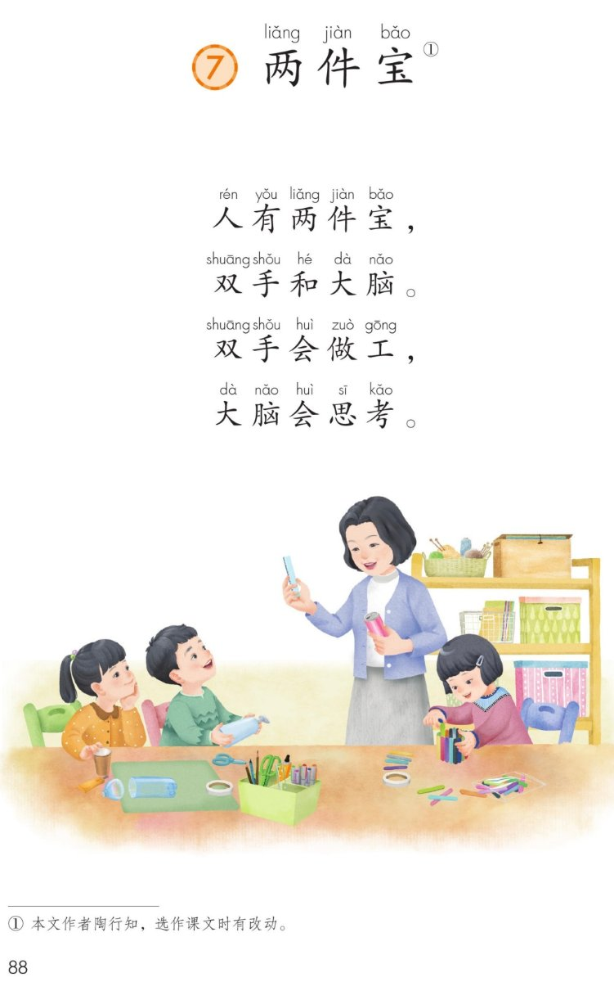
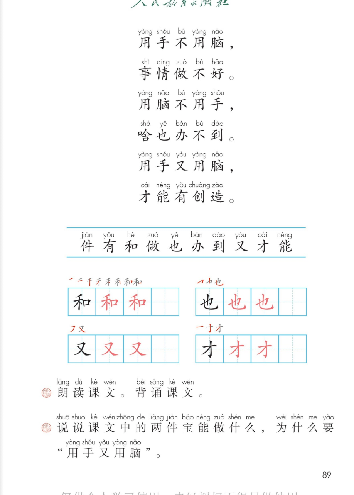

×
🔊 手机听不到声音怎么办？
① 先把手机
媒体音量调大 ，确认没开静音、没连蓝牙耳机；在微信里打开的，点右上角「⋯ → 用浏览器打开」。
② 还是没声音？到应用商店免费下载
Microsoft Edge 浏览器 （它自带朗读发声），用它打开本页面就能出声。
③ 换了 Edge 仍然没声音，说明这部手机的
硬件/系统不支持 网页朗读（多为老旧机型）；近几年买的新手机一般都能正常播放。
→ 打开声音自检
统编版 · 一年级上册 · 第七单元 · 阅读 · 课文7
⑦ 两 件 宝
人有两件宝，双手和大脑……
双手·大脑 用手又用脑 「不」变调 闯关 8 题
这一课学什么： 把 10 行儿歌读顺、背下来；认识 10 个字，写好「和、也、又、才」；
弄明白两件宝是双手 和大脑 ，为什么用手又用脑 才能有创造。🖐️🧠
页面上每行的拼音是照课本标的，供参考，以课本和老师为准。
课本第 88~89 页 点一行读一行
读前小贴士： 课文一共 10 行 ，跨两页。前 4 行说两件宝是什么、各会什么 ，
后 6 行用三种做法作比较，最后一句点出用手又用脑，才能有创造 。📖
🎵 全文连读
🔁 跟读模式（读完一行停一停）
🐢 放慢背一背（每行读两遍）
课后题① 朗读课文。背诵课文。 🎯 背诵三步：
① 跟着点读，一行一行读准；② 只看每行最后一个字当提示，试着自己背；
③ 想想「两件宝 → 三种做法 → 才能有创造」，从头背到尾。
课本第 89 页注音 点卡听读
🔎 发现了吗： 课文里三个「不」，课本注的音不完全一样 ！
「不」本来读第四声，后面一碰到第四声 的字，就要改读第二声 。
📌 变调口诀： 「不」单念、跟一二三声，都读 bù ；第四声 ，改读 bú 。对照课本第 89 页的注音，一个也不差。
🔊 三句对比连读
课本第 89 页识字条 点一张读一张
识字条 · 连起来读
件 有 和 做 也 办 到 又 才 能 —— 十个字里，和 也 又 才 还要会写
课本第 89 页田字格 先看笔顺，再动笔
✍️ 写字小提醒： 和 是左右结构（左窄右宽），也、又、才 是独体字，要写在田字格正中。
课本上「黑字示范 → 两格红字描红 → 一格自己写」，一笔一笔慢慢来。
课本第 88 页 点卡听读
课本第 89 页 点卡听读
课后题② 两件宝能做什么？为什么要「用手又用脑」？ 双手 会做工（写字、画画、搭积木），大脑 会思考（想问题、出主意）；
只动手不动脑，事情做不好；只动脑不动手，啥也办不到。
所以先想好再动手，边做边想 ，才会有创造。🗣️
👤 认识作者： 课本脚注写着「本文作者陶行知，选作课文时有改动」。
陶行知是我国的教育家，主张手脑并用 ——读书要动手做，做事要动脑想。
短短十行，就把这个道理说清楚了。
点题目可以听题，点选项就判对错，答完自动算分
已经答 0 题，答对 0 题。
点图放大

第 88 页 · 课题 · 前四行 · 插图 · 脚注

第 89 页 · 后六行 · 识字条 · 田字格 · 课后题